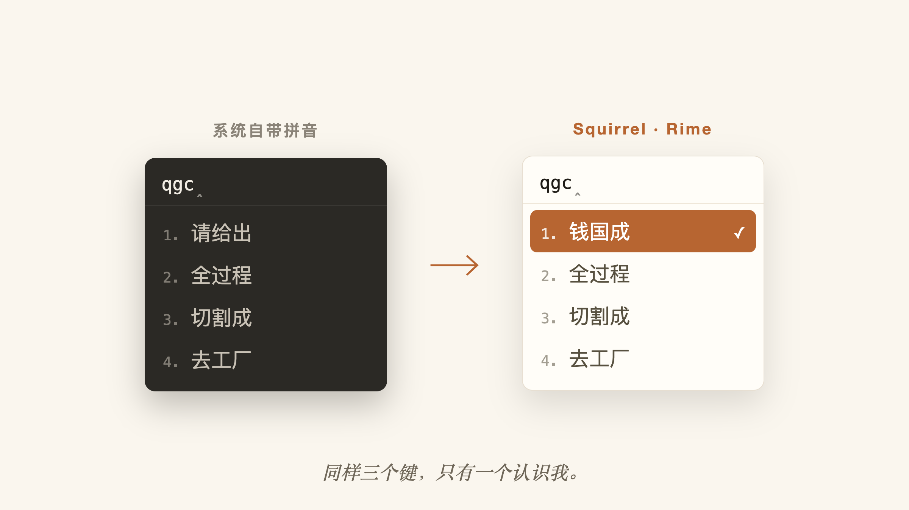
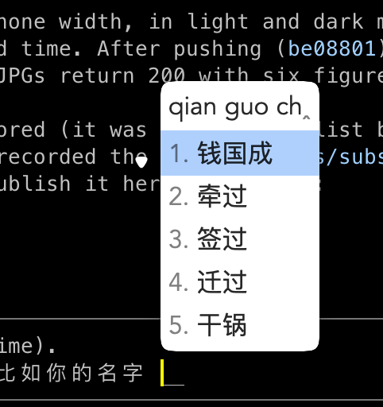
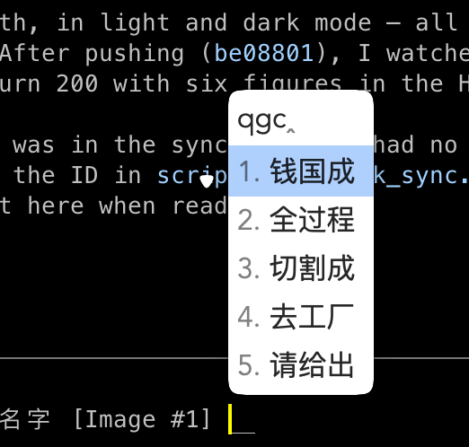
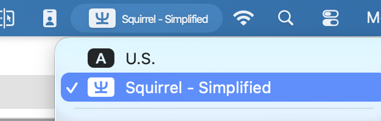
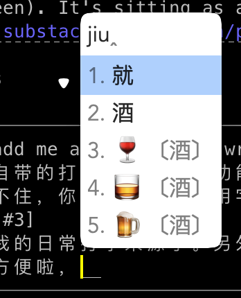
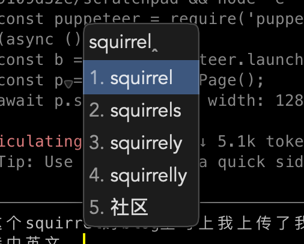

工具
我的 Mac 连我的名字都记不住
苹果自带的中文输入法不会记住你的常用字。Squirrel（Rime）记得住 —— 你的名字、常用词、甚至 emoji。配置也不用自己动手，交给你的 agent 就好。

我每天都要打自己的名字：钱国成 —— 邮件里、聊天里、各种表单里。而苹果自带的拼音输入法，每天都把别人的词排在我名字前面。
痛点：自带输入法没有记忆
它基本不学习。你一天打几十遍的词，永远埋在一堆通用词后面；想手动置顶常用词，也没有实用的入口；名字或术语稍微不常见一点，就得一页页翻候选。macOS 整体那么精致，中文输入的体验却实在说不过去。
你自己的名字就是最典型的例子：这是你打得最多的一串字，系统却每次都把它当陌生人。
解决：Squirrel（鼠须管）
Squirrel（鼠须管）是开源输入法引擎 RIME（中州韵）的 macOS 版本，完全免费。它的核心能力恰好是苹果缺的那一个：记忆 —— 而且这是默认行为，装好就有，一行配置都不用写。一个词你选过一次，它就排上来；一直在用，就一直在最前面。


它和普通输入法一样安装，安安静静待在菜单栏里。现在 Squirrel 已经是我日常打中文的唯一来源。

想怎么配就怎么配
Rime 以可定制著称：所有配置都是 ~/Library/Rime 下的 YAML 文件 —— 候选窗主题、模糊音规则、自定义词库、快捷键，全都能改。我最喜欢的一个配置：让 emoji 和符号直接出现在候选列表里。打「jiu」，🍷 🥃 🍺 就排在 酒 旁边；国旗 🇨🇳、箭头、数学符号同理。再也不用去翻 emoji 面板了。

另一个离不开的配置：中英混输。中文模式下直接敲英文单词，候选里就是英文本身和它的补全 —— 打「squirrel」直接上屏，不用 Ctrl-Space 切来切去。

怎么装：直接告诉你的 agent
Rime 的灵活是出了名的，学习曲线也是 —— schema、patch 文件、部署命令、一堆 wiki。2026 年，这些你都可以跳过：直接让你的 coding agent 帮你安装、配置 Squirrel，然后用大白话提需求就行。「候选里加上 emoji」「支持中英混输」「候选窗跟随深色模式」。agent 负责装包、写 YAML patch、重新部署，你只管继续打字。
说明书不用你读了。你负责提需求，agent 负责读说明书。
我把自己的 Rime 配置开源了：guochengqian/gordon-rime-config —— 上面这些功能（记忆、emoji、中英混输）都已经配好，让你的 agent 直接从它起步，再按你的习惯微调就行。
和这个博客本身一样：把想要的说出来，工具就在你脚下自己长出来。
喜欢这篇文章？发到自己邮箱，稍后阅读。